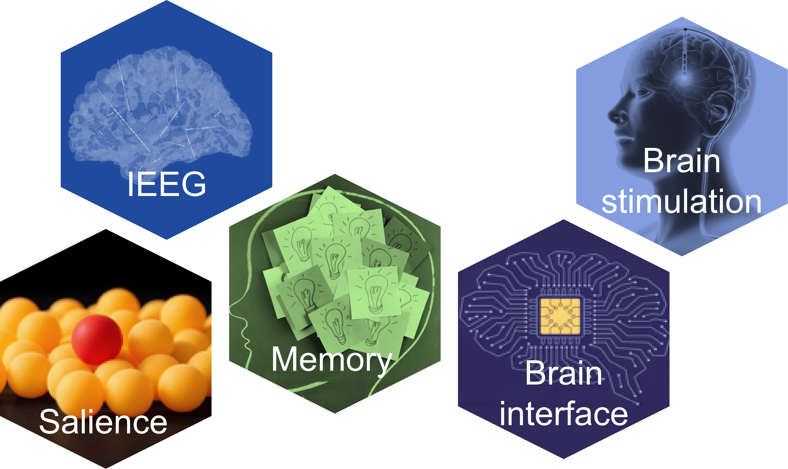

Our lab investigates how salience and learning shape human cognition, with a particular focus on attention and memory. We propose that memory operates as a single integrated system, dynamically flexing between short-term and long-term demands. We study how different forms of learning—including perceptual, statistical, sequence, associative, and automatic learning—reshape neural activity and reorganize cognitive processes over time. Extending beyond observation, we also explore brain stimulation and brain–machine interfaces, using both human and cross-species approaches to test causal mechanisms and translate discoveries into applications.
Employing a diverse array of techniques—including eye-tracking, scalp and intracranial EEG, fMRI, and computational modeling—we aim to uncover the fundamental principles that govern cognition and their translational potential. As an open and collaborative team, we welcome partnerships across disciplines and across the globe.
